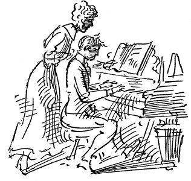

çatışan yunanlılar polisten kaçtı yataklı vagondaki yolcular silahlarla uyandırıldı
Çağla ırmak çağla
Uzaklarda denize
Getir sevdiğimi pırıl pırıl dere
Bana, yuvama
torreon'da çarpışma
Missouri'nin parlak Kongre üyesi Champ Clark, aşırı çalışmaktan, asabi tansiyondan, uykusuzluktan, iştahsızlıktan, sürekli konuşmaktan son kampanya bittiğinde ölmek üzereydim, ama üç şişe “Elektrik Bitter” beni kendime getirdi, dedi
roosevelt yeni partinin önderliğine getirildi
clark, bryan'ı çok kötü susturdu:
parker'a yardım etti
Çok çalışıyorum olmaya
Gerçekçi, sevdiğim, gerçekçi,
Ama duy söylediğimi
Çok çok uzun uzun yollar arada
Seine Nehri'nin kıyılarından buralara
Richardson'un elektrikli sandalyede ölüm cezasına çarptırılmasına yol açan suçu açıkça söylediği gibi on dokuz yaşında Boston'daki New England Müzik Konservatuvarı öğrencisi eski sevgilisi Hyannis'li Avis Linnell'i öldürmesiydi.
Kız, hem aralarındaki nişan bağı hem de içinde bulunduğu durum yüzünden rahibin bir sosyete kızı olan ve Brookline'in vârisi durumundaki biriyle evlenmesine engel olmaktaydı.
Richardson kızı kandırıp içinde bulunduğu durumdan kurtaracağına inandırdığı zehri içirerek Genç Hıristiyan Kızlar Yurdu'ndaki odasında ölümüne yol açtı.
roosevelt ilk olarak birleşik amerika'nın
panama'ya nasıl girdiğini anlattı
büyük salona girmeyi başaramayan yüz bin kişi
bağırıp çağırdı
akşam yemeği sırasında Vali, gündüz doğrudan doğruya Mr. Bryan'dan haber alamamış olduğunu bildirdi. “On beşinci sandığın da sonuçları okunduktan sonra,” dedi Mr. Wilson, “şu andaki fazla oylarımızın oranına bakarak, 175 oy çokluğuyla kazanacağımı hesaplıyorum.”
Kızıl saçlı Genç Kolay Para Kazanma Öykülerinin Kendisini Suça Sürüklediğini Söyledi
20 Aralıktaki bu duruşmaya duyulan ilgi, eski rahibin, Charles Caddesi Cezaevi'nde kendini sakatladığı duyulunca yoğunlaştı.
beş kişi güney kutbuna vardıktan sonra öldü
dıaz iş dünyasına ağır silahlar yöneltti
Çok çok uzun uzun bir yol
Seine Nehri kıyılarından buralara
Gelip kalsın diye bir kıza
Saskatchewan kıyılarında
Platte'li Söylevci Delikanlı
'96'daki Chicago Kongresi'nde, ödüller kazanmış delikanlı söylevci, ağzı hiçbir zaman içkiye değmemiş olan rahibin oğlu, gümüşsü sesini koyverdi dudaklarının arasından, sesi doldurdu geniş salonu, kendi halindeki insanların kulaklarını:
Sayın Başkan, sayın Kongre üyeleri:
eğer bu, yalnızca yeteneklerin ölçülmesi olsaydı
dinlediğiniz seçkin beylerin karşısına benim de çıkmak cesaretini göstermem gerçekten kendini beğenmişlik olurdu;
ama bu, kişiler arasında yarışma değil.
Ülkedeki en alçakgönüllü yurttaş
haklı davanın silahlarıyla donandığında
tüm haksızlık ordularından daha güçlüdür.
Sizinle, Özgürlük davası kadar kutsal bir davanın savunmasını yapmak için konuşmaya geldim . . .
gençten, koca ağızlı bir adam, beyaz boyunbağlı
gezgin oyuncu, öğüt verici, Evangelist,
sesi, büyüledi büyük ovaların ipoteklerden bunalmış çiftçilerini, Missouri Ovası'ndaki tahta kaplama okul yapılarında çınladı, kolay kredi almaya susamış küçük dükkâncıların kulaklarına çok tatlı geliyordu, insanların içini eritiyordu tıpkı güneş doğmadan önceki gri sessizlikte ardıçkuşunun ya da taklitçi kuşun şakıması gibi, kış buğdayının ansızın büyümesi gibi, borazanın yat borusu çalması, bayrağın dalgalanması gibi;
kendi halinde insanların gümüşsü dili:
. . . ücretle tutulmuş adam işvereni kadar işadamıdır;
bir küçük taşra kasabasındaki davavekili, dev gibi
metropoldeki anonim şirket danışmanı kadar işadamıdır;
köşe başında dükkânı olan tüccar New York'lu tüccar kadar işadamıdır;
sabah yola koyulup gün boyu çalışarak emek veren çiftçi, ilkbaharda başlayıp yaz boyu çalışarak emek veren çiftçi, ülkenin doğal kaynaklarına kafa gücünü, kas gücünü katarak varlık yaratan çiftçi ticaret odasına gidip ürünün değerini belirleyen kişi kadar işadamıdır;
yerin altında binlerce ayak derinliğe inen
ya da tepelerde iki bin ayak yüksekliğe tırmanan madenciler
saklı oldukları yerlerden değerli madenleri
ticaret kanallarına dökülsün diye
söküp getirenler
arka odalarda
dünyanın bağrından kopmuş paraları saklayan
birkaç ünlü para babası
kadar işadamıdır.
Çiftlik kâhyası ve taşralı davavekili oturup dinledi,
gübre alma uğruna ürününü ipotek etmiş olan çiftçi için büyük konuşmaydı bu, küçük kasaba hırdavatçısı, bakkalı, besin maddesi ve mısır tüccarı, ölü kaldırıcısı, bostancısı için büyük konuşmaydı . . .
Bu ülkenin ve dünyanın
üretici yığınlarını arkamıza alarak,
ticari çıkarları olanların, işçi çıkarlarını kollayanların,
her yerde uğraşıp didinenlerin desteğini alarak
altın esası isteyenleri
yanıtlayacağız
diyeceğiz ki onlara:
Emeğini satanların başına bu dikenli tacı zorla geçiremeyeceksiniz
insanlığı altından bir çarmıha geremeyeceksiniz.
Ciğerlerini patlatırcasına bağırdılar (dikenli taç, altın çarmıh)
onu omuzlarına alıp salonda dolaştırdılar, sarıldılar ona, sevdiler, çocuklarına onun adını verdiler, onu Başkan adayı gösterdiler,
Platte'li delikanlı söylevci
kendi halinde insanların gümüş dili.
Ama Rand'da iki İskoçyalı, McArthur'la Forrest, maden cevherinden siyanür süreciyle altın çıkarma yolunu bulmuşlardı. Altın pazarına sel gibi aktı Güney Afrika; artık gümüş yalvacına gerek kalmamıştı.
O gümüşsü dil o koca ağızda söylenip durdu, Savaşa Karşı Çıkanlardan, Yasaklamalardan, Dinsel Tutuculuktan söz etti,
Konferans platformunda küçücük turpları dişleyerek,
üzüm suyu ve su içerek,
mısırlı yemekleri tıkınarak.
Bryan, Chautaugua çadırlarının sıcak havasında, alkışlarda, el sıkışmalarda, sırt okşamalarda, Demokratların konferanslarında, komite odalarının puro dumanlı havasında saçlarını ağarttı, koca bir ağızda gümüşsü bir dildi.
Dayton'da hokkabazlıklarına yeniden başlama, kendi halinde insanları geriye götürme, dağlama, derilerini yüzme, alay etme hayalleri kurdu.
Darwinizm'le, kent insanlarının, bilim adamlarının, sakallı ahlaksız yabancıların inançsız görünüşüyle alay etme hayalleri kurdu.
Florida'da her gün öğle zamanı süslü bir arabada, tentenin altında Coral Gables için arsa satışı yapmak üzere konuştu . . . konuşmak zorundaydı, alçak sesle konuşanların susuverdiğini hissetmek, gergin, onaylayan kulakları hissetmek, alkışların patlamasını hissetmek zorundaydı.
Ne diye kampanya açmasındı yine enine boyuna, kendi halinde Tanrı sözcüğünü isteyen kendi halinde insanlar için o yıkılacak gibi olan sözcüğü niçin ayağa kaldırmasındı?
(dikenli taç, altından çarmıh)
kendi halinde yararlı rahat Tanrı sözünü niçin canlandırmasındı
kendi halinde yararlı rahat Amerikan orta sınıf yurttaşları için?
Çok oburdu. Hava çok sıcaktı. Kalp krizi öldürdü onu.
Üç gün sonra Florida'da şirket yolladı
üzerinde cimnastik yapmak için ısmarladığı elektrikli atı
Beyaz Saray'da Başkan'ın cimnastik yaptığı
elektrikli atı görünce bir tane edinmek istemişti de
Sine-göz (16)
Delaware'dan yola çıkıp kanal boyunca giderken fırın gibi sıcaktı güneşlenen kaplumbağalar geçerken bizim çıkardığımız kalın toprak rengi dalgacıkların içine yuvarlanıverdiler Adam çok neşeliydi Kadının ilk olarak keyfi yerindeydi Adam bize çaydan naneden punç yaptı biraz da Saint Croix romu ama Delaware cehennem gibi sıcaktı kıpkırmızı ispinoz kuşlarını al kanatlı karatavukları gördük dere kuşları acı içinde bağrıştı beyaz yay kamışları çayırotlarını azakeğerlerini hışırdatırken Adam hukuk reformundan politikacıların nasıl şeyler olduklarından söz etti nerelerdeydi bu ülkenin İyi İnsanları dedi ki Ama işte böyle düşündüğüm için bu ülkenin hiçbir yöresinde noter kâtipliğine seçilemem dünyadaki tüm parayı yatırsam köpek bakıcılığına bile
J. Ward Moorehouse
Delaware'ın, Wilmington Kentinde Dört Temmuz günü doğdu. Zavallı Mrs. Moorehouse, doğum sancıları çektiği sürece hastanenin dışındaki havai fişeklerin cızırtısını, patlamasını duyabiliyordu. Biraz kendine geldiği, bebeği yanına getirdikleri zaman titreyen boğuk bir fısıltıyla hemşireye bu gürültülerin bebek üzerinde kötü etki yapıp yapmayacağını, doğum öncesi etkiler bırakıp bırakmayacağını sordu. Hemşire, Şanlı Dört Temmuz günü doğduğu için küçük oğlanın çok yurtsever, belki de Başkan olacağını söyleyip ansızın tam burnunun dibine elini uzatan dilencinin doğumdan önce çok korkuttuğu kadının nasıl altı parmaklı çocuk doğurduğu üzerine uzun bir öykü anlatmaya koyuldu, ama Mrs. Moorehouse, dinleyemeyecek kadar yorgundu, uykuya dalıverdi. Daha sonra Mr. Moorehouse istasyondaki görevinden dönerken hastaneye uğradı, çocuğa Mrs. Moorehouse'ın Iowa'da çiftçilik yapan, hali vakti yerinde babasının adını, John Ward adını vermeyi kararlaştırdılar. Sonra da Mr. Moorehouse, hem baba olduğu, hem de Şanlı Dört Temmuz kutlandığı için Healyy'ye gidip kafayı çekti. Mrs. Moorehouse da yeniden uykuya daldı.
Johnny, Wilmington'da büyüdü. Ben ve Ed adlarında iki erkek, Myrtle, Edith, Hazel adlarında üç kız kardeşi doğdu, ama herkes onun hem en büyük hem en parlak çocuk olduğunu söylüyordu. Ed'le Ben ondan daha güçlü, daha iri yapılıydılar, ama devlet okulundayken bilye şampiyonu olan oydu. Bir keresinde Ike Goldberg adında küçük Yahudi çocuğun yardımıyla akikten bilyelerle yaptığı köşeleme manevra yüzünden tüm ders yılına yetecek kadar ünlendi. Daha sonra Yahudi arkadaşıyla birlikte akik bilyeleri, on tanesi haftalığı bir sente kiralamaya başladılar.
İspanyol Savaşı başladığında Wilmington'daki herkes savaşçı coşkuyla doldu, tüm oğlan çocuklar Roosevelt'in Askerleri'nin giysilerini satın alsın diye babalarının başının etini yedi, korsanlık, Pawnee Kızılderilisi, Albay Roosevelt'çilik, Maine'i Unutma, Beyaz Donanma, Macellan Boğazı'ndan geçen Oregon oyunları oynadı. Bir yaz akşamı Jonny rıhtımda dolaşırken Amiral Cervera'nın donanması, savaş düzeninde Delaware Burnu'nu döndüğü sıra donanmaya eşlik eden jandarma müfrezesi, ırmakta pavurya tutan yaşlı zenciye ateş açtı. Johnny çılgın gibi eve koştu. Mrs. Moorehouse altı çocuğunu çevresine topladı, ikisini bebek arabasında iteleyip dördünü ardından sürükleyerek kocasını bulmak için istasyona yollandı. Philadelphia'ya giden bir sonraki trene atlamaya karar verdikleri sıra, İspanyol donanmasının yalnızca ringa balığı tutan birkaç tekneden ibaret olduğu, askerlerin de sarhoşluk suçundan kışlalarında tutuklandıkları haberi yayıldı. Yaşlı zenci son oltasını da çektikten sonra kıyıya yanaşıp dostlarına sandalındaki birkaç küçük mermi deliğini böbürlenerek gösterdi.
Johnny liseyi, münazara ekibinin başkanı, sınıf konuşmacısı, “Çağın Adamı Roosevelt” adlı makaleyle makale yarışması birincisi olarak bitirince herkes onun üniversiteye gitmesi gerektiğini düşündü. Ama ailenin parasal durumu hiç de parlak değildi, babası başını sallayarak söyledi bunu. Son çocuğunun doğumundan beri hasta olan zavallı Mrs. Moorehouse ameliyat olmak için hastaneye yatmıştı, daha da bir süre orada kalacaktı. Küçük çocuklar yıl boyu, kızamık, boğmaca, kızıl, kabakulak geçirmişlerdi. Evin taksitlerini ödeme zamanı gelmişti, Mr. Moorehouse da yılbaşında beklediği ücret artışını alamamıştı. Böylece Johnny daha önceki yazlar gibi taşımacılık firmasında yardımcılık yapmak ya da Dover yakınlarında şeftali toplamak yerine bir kitap dağıtım firmasının temsilcisi olarak Delaware, Maryland, Pennsylvania dolaylarında dolaştı. Eylül ayında, firmadan, Bryant'ın birbirini izleyen ciltlerinden oluşma Amerika Birleşik Devletleri Tarihi dizisinden yüz tane satmayı başaran ilk temsilci olduğunu belirten ve kendisini kutlayan bir not aldı. Bunun verdiği güçle Batı Philadelphia'ya gidip burs almak için üniversiteye başvurdu. Bursu kazandı, sınavları geçti. Fen fakültesi birinci sınıfına kaydını yaptırdı. İlk dönem oda parası vermemek için Wilmington'dan gidip geldi. Cumartesi ve pazar günleri, Stoddard'ın konferanslarına abone bularak biraz para kazandı. Üniversitedeki ikinci yılında, bir ocak sabahı, babası istasyonun merdivenlerini kaplayan buzda kayıp kalçasını kırmasa her şey yolunda gidecekti. Hastaneye kaldırıldı, aksilikler de birbirini izledi. Ufak tefek, biraz dolandırıcı bir avukat olan Ike Goldberg'in babası, bacağı alçıya alınıp havaya dikilmiş olarak hastanede yatan Moorehouse'ı görmeye geldi, işverenin sorumluluğu yasasına dayanarak demiryollarına yüz bin dolarlık tazminat davası açması için kandırdı onu. Demiryollarının avukatları, Mr. Moorehouse'ın aşırı içki içtiğine tanıklık edecek kişiler buldular, babasını inceleyen doktor da düştüğü sabah içkili olduğunu gösteren belirtiler saptadığını söyledi, böylece de yaz ortalarında işsiz, tek kuruş tazminat alamamış, koltuk değnekleriyle yürüyen baba hastaneden çıktı. Bu, Johnny'nin üniversite eğitiminin sonu oldu. Olay onun kafasında babasına ve içkiye karşı sonsuz bir kırgınlık yarattı.
Mrs. Moorehouse, evlerini kurtarmak için babasına mektup yazıp yardım istemek zorunda kaldı, ama yanıt öylesine gecikti ki daha para gelmeden banka eve el koydu. Zaten para da pek işe yaramayacaktı, çünkü taahhütlü mektup zarfının içinde on dolarlık kâğıt paralardan oluşma yüz dolar göndermişlerdi, bu da yalnızca Pennsylvania tersanelerinin yakınında dört ailenin barındığı ahşap eve taşınma giderlerini karşılayabildi. Ben liseyi bıraktı, bir taşımacılık şirketine yardımcı olarak girdi, Johnny, Hillyard ve Miller Emlak Bürosu'nda iş buldu. Myrtle'le anneleri akşamları kurabiye ve börek pişirip Kadınlar Takas Yeri'ne gönderdiler. Mr. Moorehouse, ön odada sakat iskemlesinde oturup dolandırıcı avukatlara, mahkemelere, Pennsylvania Demiryolları'na sövüp durdu.
Bu, Johnny Moorehouse için kötü bir yıldı. Yirmi yaşındaydı, ağzına içki, sigara sürmemişti, pembe muslinler giydiğini, sarı bukleleri olduğunu, elinde güneş şemsiyesi taşıdığını hayal ettiği evleneceği kıza kendini tertemiz saklıyordu. Hillyard ve Miller'in küçük, küf kokulu işyerinde oturup, kiralık evlerin, döşeli odaların, apartman katlarının, satılık kelepir arsaların listesini yazar, Güney Afrika Savaşı'nı, Eylem Dolu Yaşamı, altına bağlanan umutları düşünürdü. Oturduğu masadan, pis bir camdan ahşap evlerle dolu sokağın bir bölümünü, birkaç karaağacı görebiliyordu. Yazın camın önünde telden, koni biçiminde sineklik olur, yakalanan sinekler vızıldar, kışın önü açık küçük gaz sobası, kendine özgü, güçsüz, yabansı bir ıslık sesi çıkarırdı. Arkasında, odayı ortasından tavana kadar bölen bir buzlucamın ardında, Mr. Hillyard'la Mr. Miller iki kişilik büyük masada karşılıklı oturur, puro içer, gazeteleri karıştırırlardı. Mr. Hillyard solgun yüzlü, siyah saçları gereğinden fazla uzun, tam bir ağır ceza avukatı olarak ün yapma yolundayken kimsenin sözünü etmediği ama Wilmington'da gerçekten yaşandığına herkesin inandığı skandal yüzünden barodan atılmış bir adamdı. Mr. Miller ufak tefekti, yuvarlak bir yüzü vardı, yaşlı annesiyle birlikte yaşardı. Emlakçılık yapmaya zorlanmasının nedeni babasının ölürken ona, Wilmington'un, Philadelphia'nın dış mahallelerinin her yanına serpiştirilmiş, ev yapımına uygun arsalardan başka hiçbir şey bırakmamış olduğu gerçeğiydi. Johnny'nin görevi, dış odada oturmak, umut verici alıcılara karşı incelikli davranmak, mülklerin listesini çıkarmak, reklam işlerine bakmak, işyerinin mektuplarını daktiloya çekmek, çöp sepetlerini, sineklikteki sinekleri temizlemek, alıcıları apartmanlara, evlere, şantiyelere götürmek, yararlı, yumuşak başlı olmaktı. Bu görevleri yerine getirirken bir çift pırıl pırıl mavi gözü olduğunu, herkesin çok hoşlandığı, çekici küçük erkek çocuk görünümüne bürünebileceğini anladı. Ev arayan yaşlı kadınlar, evleri kendilerine özellikle o tatlı delikanlının göstermesini istediler. Mr. Hillyard ve Mr. Miller'le çene çalmaya gelmiş olan işadamları başlarını sallayarak yüzlerine akıllı bir anlatım verip, “Parlak çocuk bu,” dediler. Haftada sekiz dolar kazanıyordu.
Masasına oturmuş, beş altı odalı güzel evlerin, salonlu, yemek odalı, mutfaklı, uşak odalı, üç güzel yatak odalı, banyolu, hizmetçi odalı, sulu, elektrikli, gazlı, sınırlı bir yerleşim bölgesinde, çakıllı bir alanda, sağlığa uygun yerlerin listelerini yaparken Eylem Dolu Yaşam ve kendisine âşık olacak sevimli kız dışında kafasını kurcalayan bir şey daha vardı: Şarkı sözü yazarı olmak istiyordu. Hoş bir tenor sesi olduğunu biliyordu, “Gemiye Bakın Hey”, “Mermer Salonlarda Yaşadığımı Düşledim”, “Zevklerden ve Saraylardan Hüzünle Geçtim” şarkılarını güzel söylüyordu. Pazar öğle sonraları, kupkuru, hiç evlenmemiş, otuz beş yaşlarında, ona piyanonun temel öğelerini öğreten, bestelerini kendinden geçerek dinleyen, notaya geçiren, daha Johnny gelmeden de nota kâğıtlarını hazırlamış olan Miss O'Higgins adında İrlandalı kadından müzik dersleri alıyordu. Bir şarkısı:
Ah, bir yer göster bana şeftalilerin çiçek açtığı
Kızların rüya gibi güzel olduğu . . . orası Delaware

diye başlıyordu, Miss O'Higgins bunun Philadelphia'daki müzik yayımcısına gönderilebilecek kadar güzel olduğunu söyledi, ama eserini geri yolladılar. Tıpkı bir sonraki, geri gelen ve Miss Higgins'in –o sıralarda ona Mary demeye başlamıştı, kızcağız da dersler için ondan para alamayacağını, en azından zengin olup ün yapıncaya dek alamayacağını bildirmişti– yani Marie'nin bağırarak Mac Dowell'in eserleri kadar iyi olduğunu söylediği parçası gibi. Şarkı şöyleydi:
Delaware'in gümüşsü koyu
Şeftali çiçekleri arasından birleşir denizle
Ne zaman yumuşarsa yüreğim sevgiyle
Onun tatlı hatırası döner yine içime
Miss O'Higgins'in müzik derslerini verdiği, yaldızlı iskemlelerle dolu küçük bir odası vardı. Her yanında ağır tül perdeler, açık artırmadan almış olduğu sarımsı brokardan kapı perdeleri asılıydı. Odanın ortasındaki, siyah ceviz ağacından masa eski siyah albümlerle tepeleme doluydu. Pazar öğle sonraları ders bitince kız, çay, kurabiye, tarçınlı ekmek getirir, Johnny, çok eski olduğu için üzeri yaz kış çiçekli örtüyle kapalı bulunan at kılından koltuğa yayılır, gözleri masmavi olur, yapmak istediği şeyleri söyler, Mr. Hillyard'la Mr. Miller'i alaya alır, Miss Higgins de ona ünlü bestecilerin öykülerini anlatır, yanakları al al olur, kendini neredeyse güzel bulur, her şeye karşın aralarında yaşça pek öyle büyük bir uçurum olmadığını düşünürdü. Müzik derslerinden aldığı parayla, sakat bir anneye, gençken Dublin'de tanınmış bir bariton ve yurtsever olan ama işi ayyaşlığa vuran bir babaya bakıyordu, Johnny Moorehouse'a çılgınca âşıktı.
Johnny Moorehouse, yapacak şeyi olmadığı zamanlar havasız işyerinde oturmaktan çıldıracağını, kudurmuş gibi ortalıkta koşuşup birini öldüreceğini düşünecek kadar sıkılır, müzik yayımcılarına hep gerisin geri yollanan şarkılar gönderir, geleceğine ilişkin hastalıklı bir özlemle dolu olarak Başarı Dergisi'ni okurdu, Wilmington'dan, babasının homurdanmalarından, pipo dumanından, küçük kardeşlerinin yaptığı gürültü patırtıdan, konserve sığır etiyle lahana kokusundan, annesinin buruş buruş, büzülmüş görüntüsünden, aşırı çalışmaktan yıpranmış ellerinden kaçıp kurtulma özlemiyle yanardı.
Ama bir gün, işyerinin listesine aldığı bazı mülkler üzerine rapor hazırlaması için Maryland'e, Ocean City adlı yere gönderildi. Ensesinde kötü bir çıban çıkmamış olsaydı oraya Mr. Hillyard gidecekti. Johnny'ye gidiş-dönüş biletiyle, yolculuk sırasında harcasın diye on dolar verdi.
Sıcak bir temmuz öğle sonrasıydı. Johnny, çantasını almak, giysilerini değiştirmek için eve koştu, tam tren kalkacağı sıra istasyona vardı. Düzensiz mısır tarlalarını, beyaz badanalı kulübeleri, bataklıkların kumunu donuk donuk ışıldatan, parlak, kurşun rengi gökyüzü altında, şeftali bahçelerinden, çam ormanlarından geçerek yapılan yolculuk sıcaktı, yapış yapıştı. Johnny, gri pamuklu giysisinin ceketini çıkarmış, buruşmasın diye katlayıp yanındaki koltuğa yaymış, indiğinde yeni gibi dursun diye yakalığını, boyunbağını da üzerine yerleştirmişken koridorun karşısında oturan, dantelalı pembe giysi, geniş kenarlı beyaz şapka giymiş, siyah gözlü bir kız gördü. Kendisinden oldukça büyüktü, çok şık giyinmişti, ikinci sınıf vagondan çok özel koltuklu birinci sınıf vagonlarda yolculuk yapacak türden biriydi. Ama Johnny bu trende o tür vagonlar olmadığını düşündü. Ne zaman kıza bakmasa kızın kendisine baktığını seziyordu.
Giderek hava kararıyordu, sonra da yağmur yağmaya başladı, iri damlalar camlara çarptı. Pembe dantelelar içindeki kız penceresini indirmeye çalışıyordu. Johnny hemen fırlayıp camı indirdi. “İzin verin,” dedi. “Teşekkür ederim.” Kız başını kaldırıp gözlerinin içine gülümsedi. “Ah, her şey öylesine pis ki şu korkunç trende.” Pencere sürgülerinden ise bulanmış beyaz eldivenlerini gösterdi. Johnny yine kendi sırasına, ama bu kez iç tarafa oturdu. Kız yüzünü tümden ona döndü. Burnundan ağzının kıyısına kadar uzanan çirkin çizgilerle dolu, düzgün olmayan, esmer bir yüzdü bu, ama gözleri içini hoplatıyordu. “Sizinle konuşursam uygunsuz bir iş yaptığımı düşünmezsiniz, umarım,” dedi. “Şu korkunç trende sıkıntıdan patlıyorum. New York'taki adam var diye yemin etti ama, özel koltuklu vagonu da yok.”
Johnny, utangaç, çocuksu havasını takınarak, “Sanırım gün boyu yolculuk yaptınız,” dedi.
“Daha da kötü. Dün gece gemiyle Newport'tan geldim.”
Newport sözünü edişindeki kolaylık Johnny'yi ürküttü. “Ben Ocean City'ye gidiyorum,” dedi.
“Ben de. Korkunç bir yer orası, değil mi? Babamın hatırı olmasaydı bir dakikalığına bile gitmezdim oralara. Babam orasını sever görünüyor nedense.”
“Ocean City'de çok iyi bir gelecek olduğunu söylüyorlar… Yani emlakçılık açısından demek istiyorum,” dedi Johnny.
Bir duraklama oldu.
Johnny gülümseyerek, “Ben Wilmington'dan bindim,” dedi.
“Korkunç bir yer Wilmington . . . Ben katlanamam oraya.”
“Orada doğdum, büyüdüm . . . Sanırım bu yüzden severim orasını,” dedi Johnny.
“Ah, Wilmington'da son derece hoş insanlar yok demek istemedim . . . çok tatlı eski aileler . . . Rawlines'ları tanıyor musunuz?”
“Ah, tamam tamam . . . Tüm hayatımı Wilmington'da geçirmeyi düşünmüyorum nasılsa . . . Vay vay, yağmura bakın.”
Kötü bir yağmur yağıyordu, tünellerden birinin kemeri sürüklenmişti, tren Ocean City'ye dört saat gecikmeyle varabildi bu yüzden. Geldiklerinde artık iyi arkadaş olmuşlardı. Yol boyu gök gürlemiş, şimşekler çakmış, kızın sinirleri bozulmuş, Johnny çok güçlü, koruyucu tavırlar takınmış, içeriye sivrisinekler dolmuş, ikisinin de her yanını ısırmış, birlikte çok acıkmışlardı. İstasyon zifir gibi karanlıktı, hamal yoktu, Johnny kızın bavullarını taşımak için iki kez gidip geldi, yine de kızın timsah derisi el çantasını az daha unutuyorlardı. Johnny bir üçüncü kez trene girip o çantayla kendi bavulunu almak zorunda kaldı. O sıra yaşlı bir zenci arabacı ortaya çıkıp Ocean Otel'den geldiğini söyledi. Kız, “Umarım siz de oraya gidiyorsunuz,” dedi. Johnny, evet, diyerek bindi. Kızın öyle çok bavulu vardı ki içeride bacaklarını koyacak yer kalmamıştı. Fırtına yüzünden Ocean City'de elektrik kesilmişti. Arabanın tekerlekleri derin bir kum yatağında gıcırdıyordu. Arada bir bu sesler, arabacının dilini şaklatması, kumsaldan gelen dalga sesleriyle boğuluyordu. Tek ışık, sürekli olarak bulutların arkasına giren aydan yayılıyordu. Yağmur durmuştu, ama her an yeniden boşanacakmış gibi bir gerilim vardı havada. “Eğer siz olmasaydınız o fırtınada mutlaka ölüp giderdim,” dedi kız, sonra ansızın erkek gibi elini uzattı. “Adım Strang . . . Annabelle Marie Strang . . . Gülünç bir ad değil mi?” Johnny onun elini sıktı. “Benimki de John Moorehouse . . . Sizinle tanıştığıma sevindim, Miss Strang.” Kızın avucu sıcaktı, kuruydu. Kendi avucuna bastırıyor gibiydi. Elini bıraktığında, kızın, daha uzun tutacağını umduğunu anladı. Kız alçak, boğuk bir sesle güldü. “İşte şimdi tanıştık. Mr. Moorehouse, her şey yoluna girdi . . . Babamı görünce bir güzel paylayacağım. Biricik kızını istasyonda karşılamadı diye.”
İki isli gaz lambasının aydınlattığı, karanlık otel girişinde John göz ucuyla kızın, uzun boylu, ak saçlı bir adama sarıldığını gördü, ama en gösterişli el yazısıyla kayıt defterine John Moorehouse adını karaladığında ve oda anahtarını aldığında, kızla babası gitmişlerdi. Yukardaki, küçük, çam tahtasından odanın içi çok sıcaktı. Pencereyi kaldırdığı zaman karşısındaki pas rengi görüntünün içinden çatıyı döven yağmurun şakırtısına karışan dalgaların uğultusu doldu içeri. Lavabodaki çatlak testiden leğene döktüğü ılık suyla yıkandı, yakalığını değiştirdi, yiyecek bir şeyler bulmak için yemek salonuna indi. Miss Strang, arkasında uzun boylu adamla içeri girdiğinde, kazma dişli bir kadın garson çorbasını daha yeni getirmişti. Tek lamba yemek yediği masada durduğu için ona doğru geldiler, Johnny ayağa kalkıp gülümsedi, “İşte burada, baba,” dedi kız. “Bizi istasyondan buraya getiren arabacının parasını da borçlusun ona . . . Mr. Morris sizi babamla tanıştırayım. Doktor Strang . . . Adınız Morris'ti, değil mi?” Johnny'nın yüzü kızardı. “Moorehouse, ama önemi yok . . . Sizinle tanıştığıma sevindim, efendim.”
Ertesi sabah Johnny erkenden kalkıp kumsalın arkasında yeni yapılmış caddedeki, yeşil benekli, yeni tahta kulübede çalışan Ocean City Geliştirme ve Emlak Şirketi'ne gitti. Daha hiç kimse işe gelmemişti, bu yüzden de kenti dolaştı. Sıkıntılı, gri bir gündü, demiryolu boyunca sıralanmış kulübelerin, ahşap dükkânların, boyasız küçük evlerin terk edilmiş bir görünüşleri vardı. Arada bir ensesine konan sivrisineklere eliyle vuruyordu. Son temiz yakalığını takmıştı, buruşacağı korkusuyla kaygılanıyordu. Ne zaman tahta kaldırımlardan inse pabuçlarının içine kum doluyor, keskin deniz kabukları bileklerine batıyordu. Sonunda emlak bürosunun merdivenlerinde oturan, iriyarı, beyaz keten giysili bir adam buldu. “Günaydın, efendim,” dedi. “Siz Albay Wedgewood musunuz?” Yanıtlayamayacak kadar soluk soluğa olan iriyarı adam yalnızca başını salladı. Bir büyük ipek mendili yakalığın arkasına sokmuş, ötekiyle yüzünü ovuşturuyordu. Johnny, kendi işyerinden almış olduğu mektubu verip karşısında durarak bir şey söylemesini bekledi. Şişman adam çatık kaşlarla mektubu okuduktan sonra onu içeri aldı. “Bu astım yüzünden,” dedi derin hırıltılı soluklar arasında. “Acele geldiğim zaman soluğumu kesiyor. Seni tanıdığıma sevindim, oğlum.”
Johnny, öğlene kadar, mavi gözlü küçük oğlan havaları takınarak, onun, İç Savaş, General Lee, Beyaz Atlı Yolcu, Doğu Kıyısındaki Savaş'tan önce verilen şölenler üzerine anlattığı öyküleri incelikle dinledi, serinlemek için dondurma almak üzere köşedeki dükkâna koştu, Albay Wedgewood'un çevresinde dolaştı, yazlık dinlenme yeri olarak Ocean City'nin geleceğinden söz etti. “Atlantic City ya da Cape May'de olup da burada bizde bulunmayan şey nedir?” diye gürledi Albay Wedgewood. Öğle yemeği için onunla birlikte küçük evine gitti, böylece de Wilmington'a dönmesi gereken treni kaçırdı, naneli bir içki önerisini geri çevirdi –ne içki kullanıyordu ne sigara– ama Albay kendine iki sert içki hazırlayıp içerken beğeniyle ona bakarak ayakta yanında durdu. Albay bunları astımına iyi geldiği için içiyordu, onun zenci aşçısı Maime'yi etkilemek için mavi gözlerini, çocuksu, sarsak tavırlarını kullandı, saat dört sıralarında da Kuzey Carolina valisiyle Güney Carolina valisi konusunda anlatılanlara gülüyordu. Ocean City Geliştirme ve Emlak Şirketi'nde haftalığı on beş dolara önerilen işi kabul etmişti, bir de dayalı döşeli küçük ev verilecekti kendisine. Otele dönüp Mr. Hillyard'a yazdığı mektuba, arsaların durumunu belirten raporla harcamalarının tutarını ekledi, böyle kısa sürede işinden ayrıldığı için özür diledi, ama bunu, elinden geldiğince çok para kazanmasına gereksinme duyan ailesi yüzünden yapmak zorunda kaldığını açıkladı. Daha sonra annesine yazarak Ocean City'de kalacağını belirtti. Ondan hemen giysilerini göndermesini rica etti. Miss O'Higgins'e de yazsam mı, diye düşündü, ama yazmamaya karar verdi. Ne yani, geçmiş geçmişti.
Akşam yemeğini de yedikten sonra, parasının çıkışmayacağından korkarak hesabını istemek için otel kâtibine başvurdu, cebinde çok az bir bozukluk, elinde de bavuluyla dışarı çıkarken Miss Strang'a rastladı. Yanında Mr. de la Rochevillaine diye tanıştırdığı, kısa boylu, esmer bir adam vardı. Fransız'dı ama, iyi İngilizce konuşuyordu. “Umarım bizi bırakmıyorsunuz,” dedi kız. “Hayır, efendim, yalnızca Albay Wedgewood'un kumsaldaki kulübelerinden birine taşınıyorum.” Fransız adam Johnny'yi tedirgin etmişti. Miss Strang'ın yanında berberiymiş gibi uysalca durmuş gülümsüyordu. “Ah, demek bizim şişman dostumuzu tanıyorsunuz, öyle mi? Babamın büyük dostudur. Bence o, boyuna anlattığı Beyaz Atlı Yolcu öyküsüyle çok sıkıcı biri.” Miss Strang'la Fransız adam ortak sırları varmış gibi aynı anda gülümsediler. Fransız büyük bir rahatlıkla, ayak parmaklarının ucunda sallanıyor, sahip olduğu ve arkadaşına göstererek övündüğü eşyanın yanındaymış gibi duruyordu. Pamuklu gömleğinin altında göbeğinin şişkince kabardığı yere bir yumruk indirivermek geçti Johnny'nin içinden. “Şey, gitmeliyim,” dedi. “Daha sonra gelmez misin? Bu akşam dans olacak. Senin de gelmeni çok isterdik.” “Lütfen, mutlaka gelin,” dedi Fransız. “Fırsat bulursam gelirim,” dedi Johnny ve bavulu elinde, yakalığının altında kendini yapış yapış, kırgın duyarak uzaklaştı, “İçine etmişim Fransız'ın,” dedi yüksek sesle. Ama yine de Miss Strang'ın kendisine bakışında bir şeyler vardı. Âşık olmak üzereyim, diye düşündü.
Durgun sabahlarla, fırtınalı yağmurlar toplayan nemli akşamüzerleriyle sıcak bir ağustostu. Caddelere yayılmış kızgın kumlu toprakları, çam ağaçlı kumsalları gösterecek alıcıları bulunmadığı zamanlar Johnny işyerinde, iki kollu elektrikli vantilatörün altında tek başına otururdu. Beyaz pamuklu pantolon, kolları dirseklerine kadar kıvrılmış pembe tenis gömleği giyer, Ocean City (Maryland) üzerine lirik tanıtma yazıları yazardı. Bu, Albay'ın parlak düşüncesi olan tanıtım kitapçığın önsözünü oluşturacaktı: “Sonsuz Atlantik'in hayat veren dev dalgaları Ocean City'nin (Maryland) kristalden kumsallarını döver . . . çam ağaçlarının güç veren soluğu astımlılar için, veremliler için can kaynağıdır . . . yanı başında sporcuların cenneti Indian Irmağı uçsuz bucaksız ağzını yayar bereketli kılarak . . .”
Öğleden sonra terleyerek Albay gelir, hırıltılı soluklar alır, Johnny ona yazmış olduklarını okur, o da, “Şahane, evlat, şahane,” derdi. Hemen bitirilmesini ister, Johnny sayfaları kıvrılmış Yüzyılın Sözlüğü'nden yine yığınla sözcük arar, yeniden yazmaya koyulurdu.
Âşık olması dışında hayatı çok iyiydi. Akşamları Ocean Otel'den ayrılamıyordu. Çatırdayan sundurmalı merdivenlerini çıktığı, palmiye yaprağından yelpazeleriyle serinleyen ve iskemlelerinde sallanan yaşlı kadınların önünden geçip kafesli kapıdan içeri girdiği her keresinde Annabelle Marie'yi bu sefer yalnız bulacağından emin olur, ama her keresinde de Fransız hep gülümseyerek, soğukkanlı, şiş göbekli, onun yanında olurdu.
İkisi de Johnny'ye aşırı ilgi gösterir, küçük bir köpek yavrusu ya da değerli bir bebekmiş gibi onu okşarlardı. Kız ona “Boston” dansı yapmayı öğretmiş, dük, baron ya da benzeri bir şey olduğu ortaya çıkan Fransız, boyuna içki, sigara, kokulu purolar sunup durmuştu. Johnny kızın sigara içtiğini anladığında şaşkınlıktan çılgına dönmüştü ama bu, dükler, Newport, yabancı ülkelere yapılan yolculuklar falan gibi şeylerle birlikte düşünülünce pek de yadırgatıcı değildi. Bir çeşit çok hoş kokulu parfüm kullanıyordu, sigara dumanının kötü kokusuna karıştığında dans ederlerken Johnny'nin başını döndürüyor, kanını kaynatıyordu. Kimi akşamlar bilardo oynatarak Fransız'ı yorgunluktan bitkin düşürmeye çalışıyor, ama kız da onunla birlikte yatmaya gidiyor, Johnny fısıltıyla sövüp sayarak eve dönmek zorunda kalıyordu. Soyunurken hâlâ burun deliklerini gıcıklıyordu kızın kokusu. Bir şarkı yazmaya çalışıyordu ona:
Mehtaplı denizde
Bitkinim özleminle
Annabelle Marie
Sonra ansızın bunların tümü gözüne, müthiş salakça görünür, sırtında pijaması, sivrisinekler kafasının çevresinde vızıldar, denizin gümbürtüsü, sineklerin, çekirgelerin bağrışmaları kulaklarında uğuldarken uzun adımlarla sundurmada dolaşır, genç, yoksul, eğitimsiz olduğuna sövüp sayar, tüm kahrolası Fransızları satın alacak kadar parayı nasıl kazanacağını kafasında kurardı. Sonra da kızın sevdiği güvendiği tek kişi o olurdu, hiç de aldırmazdı isterse çevresinde maskot diye birkaç kahrolasıca Fransız taşımasına. Yumruklarını sıkıp sundurmada uzun adımlar atarken mırıldanırdı: “Yemin ederim yaparım bunu.”
Sonra bir akşam Annabelle Marie'yi yalnız buldu. Fransız akşam treniyle gitmişti. Kız, Johnny'yi gördüğü için mutlu gibiydi, ama kafasının başka yerde olduğu açıkça anlaşılıyordu. Yüzüne aşırı pudra sürmüştü, gözleri kızarmıştı. Belki de ağlamıştı. Mehtap vardı. Kız elini onun koluna koydu, “Moorehouse benimle kumsalda yürüyün,” dedi. “Salıncaklı iskemlelerine yayılmış şu hindileri görmekten nefret ediyorum.” Bozuk çimenlikten kumsala inen dar yolda Doktor Strang'la karşılaştılar.
“Rochevillaine'e de ne oluyor, Annie?” dedi. Geniş alınlı, uzun boylu bir adamdı. Dudakları kasılmıştı, kaygılı görünüyordu.
“Annesinden mektup aldı . . . İzin vermiyor.”
“Yaşı kendi kararlarını vermeye uygun değil mi?”
“Baba, anlamıyorsun Fransız soylularını . . . aile konseyi izin vermiyor . . . Gelirini kesebilirler.”
“Senin ikinize de yetecek gelirin var . . . Söyledim ona.”
“Of, bu konuyu kapayamaz mısın?..” Ansızın küçük bir çocuk gibi hüngür hüngür ağlamaya başladı. Koşarak Johnny'nin önünden geçip otele girdi, dar yolda Doktor Strang'la onu yüz yüze bıraktı. Johnny'nin orada bulunduğunu yeni görmüştü Doktor. “Şey . . . bizi bağışlayın,” diyerek hızla önünden geçip uzun adımlarla yürüdü, Johnny'yi tek başına kumsala inip mehtabı seyretmesi için yalnız bıraktı.
Ama sonraki geceler Annabelle Marie onunla birlikte kumsalda yürüdü, Johnny onun Fransız'ı pek de öyle çok sevmemiş olduğunu düşünmeye başladı. Oraya buraya dağılmış kulübelerin ötesine geçer, ateş yakar, alevlere bakarak yan yana otururlardı. Kimi zaman yürürken elleri birbirine değerdi. Kız, ayağa kalkmak istediğinde iki elinden tutup çeker, kendine iyice yaklaştırıp öpmeyi düşünür, ama bunu yapmayı göze alamazdı.
Bir gece çok sıcaktı, kız ansızın denize girmeyi önerdi.
“Ama mayolarımız yok.”
“Hiç mayosuz yüzmedin mi? Böylesi çok daha iyidir . . . Ama niye, tuhaf çocuk, karanlıkta bile yüzünün kızardığını görüyorum.”
“Bana güveniyor musun?”
“Hem de nasıl güveniyorum.”
Kumsalda biraz uzaklaşıp hızla soyundu, aynı hızla suya daldı. Kıza bakmaya gücü yetmemişti, yalnızca göz ucuyla beyaz bacaklardan, göğüslerden, ayaklarının dibinde bembeyaz kırılan köpüklerden bir görüntü yakalayabilmişti. Yeniden giyinirken bir erkeğin yanında böyle çırılçıplak denize girebilen bir kızla gerçekten evlenmek isteyip istemeyeceğini düşünüyordu. Şu kahrolasıca Fransız'la da bunu yapıp yapmadığını merak etti. Kızın, siyah saçlarını başının çevresine dolayıp oturduğu ateşin yanına gittiğinde Annabelle Marie ona, “Mermerden bir Pan heykeli gibiydin,” dedi. Ağzında firketeleri vardı, bunların arasından konuşuyordu. “Çok sinirli bir mermer Pan . . . Saçımı ıslatmışım.”
Hiç de niyeti olmamasına karşın kızı kendine çekip öptü. Kız bunu hiç de yadırgamış görünmedi, tersine kollarının arasına büzülüp yine öpsün diye yüzünü kaldırdı. “Benim gibi beş parasız biriyle evlenir miydin?”
“Hiç düşünmedim sevgilim, ama olabilir.”
“Sanırım sen epeyce varlıklısın, ama benim meteliğim yok. Üstelik de eve, bizimkilere para yollamak zorundayım. Yalnız umutlarım var.”
“Ne gibi umutlar?” Kız yüzünü kendine çekip saçlarını karıştırdı, öptü onu.
“Şu emlak işinde iyi işler çevireceğim. Yemin ederim çevireceğim.”
“Bir şeye yarar mı sanıyorsun, zavallı bebeğim?”
“Sen benden pek de öyle büyük değilsin . . . Kaç yaşındasın Annabelle?”
“Şey, açık söyleyeyim, yirmi dört ama sen kimseye söyleme, ne bu geceyi ne de başka bir şeyi.”
“Kime söyleyebilirim ki Annabelle Marie?”
Geriye dönerlerken kızın kafasında başka şeyler var gibiydi, Johnny'nin söylediği hiçbir şeye aldırmıyordu. Bir şeyler fısıldayıp durdu.
Bir başka akşam, Johnny'nin kulübesinin sundurmasında birlikte oturmuş sigara içerlerken –artık o da kıza eşlik etmek için arada bir içiyordu– Johnny ansızın onu üzen şeyin ne olduğunu sordu. Kız ellerini onun omuzlarına koyarak sarstı. “Ah, Moorehouse, öylesine aptalsın ki . . . ama bu hoşuma gidiyor.”
“Ama seni üzen bir şeyler olmalı Annabelle . . . Birlikte trenle geldiğimiz gün hiç de böyle üzgün değildin.”
“Eğer sana söylersem . . . Tanrım yüzünün ne duruma geleceğini düşünebiliyorum . . .” Johnny'yi her zaman tedirgin eden o katı, boğuk kahkahasını attı.
“Keşke seni zorla konuşturmaya hakkım olsaydı . . . Şu kahrolasıca Fransız'ı unutman gerekli.”
“Ah, öylesine küçücük bir masumsun ki,” dedi Annabelle Maire. Sonra ayağa kalkıp sundurmada bir aşağı bir yukarı yürümeye başladı.
“Lütfen oturur musun, Annabelle? Benden azıcık olsun hoşlanmıyor musun?”
Kız, ellerini onun saçlarında, yüzünde gezdirdi. “Elbette hoşlanıyorum, küçük, mavi gözlü budala . . . Ama, anlamıyor musun, her şeyin beni çılgına çevirdiğini, oteldeki tüm o yaşlı kediler benden orospuymuşum gibi söz ediyorlar, çünkü arada bir özel odamda sigara içiyorum . . . Neden ama, İngiltere'de bazı en soylu kadınlar bile herkesin içinde sigara içiyor, kimse de kalkıp onlara ‘Ooo,' diyemiyor. Sonra babam için de kaygılanıyorum, şu emlak işine çok para yatırıyor. Sanırım aklını kaçırdı.”
“Ama burada büyük bir patlama olacağı konusunda her türlü belirti var. Zamanla bir başka Atlantic City olacak burası.”
“Şimdi bak bana, kes palavrayı, kaç satış yapıldı bu ay?”
“Şey, çok değil . . . ama kesin kararın beklendiği bazı önemli satışlar var . . . Sonra yeni oteli yapacak olan şu şirket de var.”
“Babam yatırdığı her doların elli sentini geri alırsa kendini talihli saysın . . . Boyuna da bana nasıl boş kafalı olduğumu söylüyor. O doktor, maliye büyücüsü değil, bunu da anlamak zorunda. Senin gibi yitirecek hiçbir şeyi olmayan biri için emlak işleriyle oynamak yükselmenin bir yolu olabilir . . . Ama, şu şişko Albay'a gelince, bilmiyorum, ya enayi ya da kaçık.”
“Ne doktoru senin baban?”
“Yani Doktor Strang'dan söz edildiğini hiç duymadığını mı söylüyorsun? Philadelphia'daki en ünlü kulak-burun-boğaz uzmanıdır . . . Ah, ne tatlısın . . .” Yanağından öptü. “ . . . ve bilgisiz . . .” Yine öptü . . . “ve el değmemiş.”
“Sandığın kadar el değmemiş değilim,” diye çabuk çabuk konuşarak dimdik kızın gözlerine baktı. Birbirlerine bakarken yüzleri al al oldu. Kız yavaşça başını onun omzuna gömdü.
Johnny'nin yüreği güm güm atıyordu. Sürdüğü parfümden, saçlarının kokusundan başı dönüyordu. Omuzlarına sarılarak kızı ayağa kaldırdı. Biraz sendeleyerek, bacakları birbirine değerek, kızın korsesinin katılığını kaburgalarında hissederek, saçı yüzüne sürünerek, oturma odasından geçirip yatak odasına soktu. Arkalarından da kapıyı kilitledi. Sonra elinden geldiğince ağzını bastırarak kızı dudaklarından öptü. Kız, yatağa oturup giysilerini çıkarmaya başladı. Johnny, biraz fazla soğukkanlılıkla, diye düşündü, ama geri dönemeyecek kadar ileri gitmişti. Kız korsesini de çıkararak bir köşeye fırlattı, “İşte,” dedi. “Hayvanca şeylerden nefret ederim.” Ayağa kalkıp ona doğru yürüdü, iç çamaşırları içinde karanlıkta el yordamıyla yüzüne dokundu.
“Ne oluyor sana, sevgilim?” dedi ateşli bir fısıltıyla. “Benden korkuyor musun?”
Her şey Johnny'nin umduğundan kolay oldu. Giyinirlerken karşılıklı gülüşüyorlardı. Kumsal boyunca birlikte Ocean Otel'e yürüdükleri sırada Johnny kafasında kurup duruyordu: “Artık benimle evlenmek zorunda kalacak.”
Eylül ayında, soğuk kuzeydoğudan gelmiş birkaç kişi, İşçi Bayramı'ndan hemen sonra otelden ve kulübelerden ayrıldılar. Albay, yaklaşmakta olan patlama ve reklam kampanyası üzerine büyük büyük sözler etti, daha çok içki içti. Johnny, artık yemeklerini Mrs. Ames'in pansiyonu yerine onunla birlikte yiyordu. Kitapçık bitirilmişti, onaylanmıştı, Johnny, yayıncılardan fiyat almak için yazılar ve resimlerle birkaç kez Philadelphia'ya gidip gelmişti. Wilmington'da durmaksızın trenle geçmek ona çok hoş bir bağımsızlık duygusu veriyordu. Doktor Strang gittikçe daha kaygılı görünüyor, yatırımını korumaktan söz ediyordu. Johnny'nin kızıyla nişanlanması üzerine hiç konuşmamışlardı, ama anlaşmaya varmış gibiydiler. Annabelle'in duygusal durumu anlaşılır gibi değildi. Sıkıntıdan patladığını söyleyip duruyordu. Boyuna Johnny'ye takılıyor, onu paylıyordu. Bir gece Johnny ansızın uyanıp onu yatağının başında dikilir buldu. “Seni korkuttum mu?” dedi kız. “Uyuyamadım . . . Dalgaları dinle.” Rüzgâr kulübenin çevresinde çığlıklar atıyor, kumsalda dev dalgalar gürlüyordu. Kızı yatağından çıkartıp otele geri gönderebildiğinde neredeyse gün doğmuştu. “Bırak görsünler beni . . . Aldırdığım yok,” diyordu. Bir başka sefer de birlikte kumsalda yürürlerken midesi bulandı, bir kum tepesinin ardında kusarken Johnny durup onu bekledi, sonra koluna girip bembeyaz olmuş titreyen kızı Ocean Otel'e geri götürdü. Kaygılanıyordu, tedirgindi. Philadelphia'ya yaptığı yolculukların birinde gazete muhabiri olarak iş bulup bulamayacağını anlamak için Public Ledger'a gitti.
Bir cumartesi öğleden sonra, Ocean Otel'in salonunda oturmuş gazete okuyordu. Konukların çoğu gitmiş olduğu için hemen kimse yoktu ortalıkta. Ayın on beşinde otel kapanacaktı. Ansızın iki kişinin konuşmasına kulak kesildi. İki komi gelip duvara dayalı sırada alçak sesle konuşmaya koyulmuşlardı.
“Ben bu yaz payıma düşeni aldım, almadımsa Tanrı cezamı versin, Joe.”
“Şu hastalığa yakalanmasaydım ben de alırdım.”
“Şu Lizzie'yle sürtüp durma demedim mi sana? Yemin ederim ki bu kentteki tüm orospu çocukları yatmıştır o karıyla, zenciler bile.”
“Şey, şu karıyı becerdin mi . . . Hani biliyorsun, kara gözlüsünü? Yatarım demiştin ya.”
Johnny buz kesti. Gazeteyi dimdik tuttu önünde.
Komi hafiften bir ıslık çaldı. “Ateşli kan,” dedi. “Canına yandığım şu sosyete kızlarının yaptıkları kudurtuyor beni.”
“Sahi becerdin mi?”
“Şey, pek sayılmaz . . . Hastalık kaparım diye korktum. Ama o Fransız herif düzdü . . . Namussuzum odasından çıkmıyordu kızın.”
“Biliyorum çıkmadığını. Yakaladım onu bir keresinde.” Güldüler. “Kapıyı kilitlemeyi unutmuşlardı da.”
“Karı çırçıplak mıydı?”
“Öyle gibi bir şey . . . sabahlığın altında . . . Herif de kuru gürültüye pabuç bırakmıyor, buzlu su istemesin mi?”
“Niye gidip Mr. Greeley'e söylemedin?”
“Ne bok yemeye söyleyeyim? Fransız herif hiç de kötü değildi. Bana beş teklik verdi.”
“Sanırım bu karı, canı ne halt isterse yapıyor. Babası bu deliğin sahibi gibi bir şeymiş dediler bana, onunla Albay Wedgewood.”
“Sanırım şimdi de şu emlak işindeki genç çocuk alıyor payını . . . Onunla evlenir belki de.”
“Canına yandığım, ben bile evlenirdim böyle işveli bir karıyla.”
Johnny soğuk terler döküyor, görünmeden oradan kaçmak istiyordu. Bir zil çaldı, çocuklardan biri koşup gitti. Ötekinin sıraya iyice yerleştiğini duydu. Belki de dergi falan okuyordu. Johnny gazeteyi usulca katlayıp sundurmaya çıktı. Hiçbir şey görmeksizin sokakta yürüdü. Bir süre, istasyona inerek ilk trene atlayıp gitmeyi düşündü, bu işin de cehennemin dibine kadar yolu vardı ama çıkartılması gereken o kitapçık, beklenen patlama olursa işe bir yerlerden başlama şansı, sonra da para kazanma yoluyla, yani Strang'larla kurduğu bağlantı önemliydi ve talih genç adamın kapısını bir kere çalardı. Kulübesine dönüp yatak odasına geçerek kapıyı kilitledi. Bir süre dolabın aynası önünde kendini inceleyerek durdu. Düzgün ayrılmış ince telli saçlar, kalemle çizilmiş gibi bir burun, çene, görüntü bulandı. Ağlıyordu. Kendini yatağa yüzüstü atarak hıçkırdı.
Kitapçığın provalarını okumak için Philadelphia'ya gittiğinde basılması için düğün çağrılarının taslaklarını da birlikte götürdü. Kitapçık şöyle başlıyordu:
OCEAN CITY (Maryland)
eşi bulunmaz bir dinlenme yeri
Düğün çağrısıysa şöyleydi:
Doktor Alonso B. Strang
Kızı Annabelle Marie'yle
J. Ward Moorehouse'ın
evlenme törenlerine sayın konuklarını bekler Saint
Stephen Protestan Kilisesi Germantown, Pennsylva-
nia On beş Kasım Bin dokuz yüz dokuz, saat on iki
Sonra, özel listeye alınmış olanlara gönderilecek olan içkili eğlence çağrısı vardı. Doktor Strang, çok sayıda kişiyle ilişki içinde bulunduğundan büyük bir düğün olacaktı bu. Annabelle, J. Ward'ın, John W.'den daha seçkin bir ad olduğuna karar vererek ona Ward demeye başladı. John'dan ailesini çağırmasını istediklerinde, annesiyle babasının kötürüm, kardeşlerininse bu düğünden bir şey anlamayacak kadar küçük olduklarını söyledi. Annesine mektup yazarak kendisine mutlaka hak vereceğini, durumu bildiğini, babanın ne biçim adam olduğunu gördüğünü . . . anlayış göstereceğine güvendiğini belirtti. Sonra bir gün Annabelle bebek beklediğini söyledi.
“Ben de bunu tahmin etmiştim.”
Kendininkilere bakan gözleri, ansızın ürkütücü biçimde soğuk, kapkara kesildi. Johnny, o an Annabelle'den nefret etti, sonra mavi gözlü çocuksu gülümsemesini takındı. “Yani ne kadar sinirli olduğunu görüyordum da,” dedi. Gülerek kızın elini tuttu. “Demek seni saygıdeğer bir hanım yapacağım, haaa?” Şimdi kıza karşı üstünlük kazanmıştı. Öptü onu. Kız birden gözyaşlarına boğuldu.
“Ah, Ward, keşke öyle demeseydin.”
“Yalnızca şaka yapıyordum, şekerim . . . Ama bu durumdan kurtulmanın bir yolu yok mu?”
“Her yolu denedim . . . Babam anlar bu işlerden ama ona söyleyemedim. Benim oldukça bağımsız biri olduğumu biliyor, yine de . . .”
“Evlendikten sonra bir yıl buradan uzaklarda kalmamız gerekecek . . . Benim için rezalet bir şey bu Public Ledger'dan iş önerisi de almıştım.
“Avrupa'ya gideceğiz . . . Babam balayı gezimizi düzenleyecek . . . Benim sorumluluğumdan kurtulduğu için seviniyor, kendi param da var, annemden kalan param.”
“Belki de yanılıyorsun.”
“Nasıl olur?”
“Ne kadar oluyor . . . yani bu işi anlayalı?..”
Gözleri yine birden kapkara, araştırıcı kesildi. Karşılıklı bakışırken birbirlerinden nefret ediyorlardı. “Epeyce oluyor,” diyerek çocukmuş gibi John'un kulağını çekti, eteklerini hışırdatarak yukarı, giyinmeye gitti. Albay, nişanlamalarından ötürü çok sevinçliydi, bunu kutlamak için hepsini akşam yemeğine çağırdı.
Düğün, son derece seçkin bir hava içinde yapıldı, J. Ward Moorehouse, iyi dikilmiş redingotuyla, ipek şapkasıyla gözleri üzerinde topladığını anladı. Wilmington'daki annesi, düğün hakkında gazetelerde yazılanlara dalarak ütü yaparken kullandığı kızgın kömürleri soğuttu birbiri arkasına, sonra da gözlüklerini çıkardı, gazeteleri özenle katladı, ütü tahtasının üzerine koydu. Çok mutluydu.
Genç çift, ertesi gün Teutonic'le New York'tan denize açıldı. Deniz öylesine dalgalıydı ki yalnızca son iki gün kamaralarından dışarı çıkabildiler. Ward'ın sürekli midesi bulandı, Annabelle'e “Madam,” diyen, onu Ward'ın annesi sanan, sevimli bir Londralı kamarot baktı ona. Annabelle denizlere alışıktı, ama bebek yüzünden çok rahatsız oldu. Ne zaman el aynasına baksa kendini çok solgun bulduğundan yatağından çıkmıyordu. Kadın kamarot ona içine azıcık tonik katılmış cin içmesini önerdi, yolculuğun son bir iki günü bunun yardımıyla toparlanabildi. Kaptanın akşam yemeği verdiği gece, siyah dantelden giysiyle sonunda yemek salonunda boy gösterdi. Herkes onun gemideki en güzel kadın olduğunu düşündü. Ward, karısının giyinirken dört cin, bir de martini içtiğini gördüğünden şampanyayı fazla kaçırarak sarhoş olacağı korkusuyla tedirgindi. Yaşlı banker Mr. Jarvis Oppenheimer ve karısıyla dostluk kurmuştu, Annebelle'in onlara çok hoppa görüneceğinden korkuyordu. Bununla birlikte, süvarinin verdiği yemek terslik çıkmaksızın sürdü, Annabelle'le Ward birbirine yakışan bir çift olduklarını gördüler. Dr. Strang'ı tanıyan kaptan, daha sonra gelip sigara salonunda yanlarına oturdu, onlarla, Mr. ve Mrs. Oppenheimer'le şampanya içti, herkes birbirine bu çekici, ışıl ışıl genç çiftin kim olduğunu sordu, mutlaka ilginç birileri oldukları söylendi, İrlanda Denizi'ndeki deniz fenerlerinin ışıklarını gördükten sonra yatmaya giderlerken, deniz tutması yüzünden kamarada geçirdikleri o günlere değdiğini düşünüyorlardı.
Karanlık kasvetli sokaklarında sürekli yağmurun çiselediği Londra'yı Annabelle sevmiyordu, bu yüzden de Paris'e geçmeden önce Cecil'de yalnızca bir hafta kaldılar. Folkestone'dan Boulogne'a giden gemide, Ward'ın yine midesi bulandı, Boulogne Limanı'nın uzun dalgakıranları içindeki durgun sulara vardıklarında, bir İngiliz deniz subayıyla yemek salonunda konyak içerken bulduğu Annebelle'e bu yüzden ayak uyduramadı. Dilini bilmediği bir ülkede bulunmak sandığı kadar kötü değildi, Annabelle çok iyi Fransızca konuşuyordu, birinci sınıf kompartımanda, yanlarında söğüş tavuk eti, sandviçler, Ward'ın ilk kez içtiği tatlı şarapla –Roma'da Romalılar gibi davran– Paris'e giderlerken tam anlamıyla balayında bir çift görüntüsü içindeydiler. İstasyondan Otel Wagram'a doğru yola çıktıklarında yanlarında yalnızca el çantaları vardı, çünkü otelin hamalı geri kalanları getirecekti. Islak kaldırımlarda donuk donuk parlıyordu yeşil gaz lambalarının ışıkları. Atın nalları asfaltta keskin seslerle çınlıyor, arabanın lastikleri aşınmış tekerlekleri düzenli dönüyor, yağmurlu bir kış gecesi olmasına karşın sokaklar insanlarla dolup taşıyor, kahvelerin önünde, küçük sobaların çevresindeki mermer masalarda bir sürü kişi oturuyor, hava kahve, şarap, yanık yağ, kızarmış ekmek kokuyordu. Annabelle'in gözleri tüm ışıkları yakalıyordu; çok güzeldi, sürekli bir şeyler göstermek için John'u çekiştiriyor, bir eliyle onun kalçasını okşuyordu. Annabelle, daha önce babasıyla kalmış olduğu otele yazarak geleceklerini bildirmişti. Oraya vardıklarında beyaz bir yatak odasıyla oturma odasının, önlerinde eğilen, çok kibar, şık, yuvarlak yüzlü bir otel yöneticisinin, şöminede sıcacık bir ateşin kendilerini beklediğini gördüler. Yatmadan önce, bir şişe şampanyayla küçük bisküviler aldılar, Ward kendini krallar gibi hissetti. Kız, yolculuk giysilerini çıkarıp sabahlığını, Ward onun vermiş olduğu ama daha hiç sırtına geçirmediği gecelik ceketini giydi, son aylarda içinde birikmiş olan tüm acı duygular eriyiverdi.
Uzun süre ateşin karşısında oturarak küçük bir kutudan aldıkları Muratti sigaralarını içtiler. Annabelle, sürekli saçlarını karıştırıyor, ellerini omuzlarında, boynunda dolaştırıyordu. “Niçin daha tutkulu değilsin Ward?” dedi boğuk, alçak sesle. “Ben, ayaklarının yerden kesilmesinden hoşlanan kadınlardanım . . . Dikkat et . . . Beni yitirebilirsin . . . Burada bir kadınla nasıl sevişileceğini bilen adamlar var.”
“Bana bir şans tanı, olmaz mı?.. Önce bir Amerikan firmasında iş bulacağım. Sanırım, Mr. Oppenheimer bana yardımcı olacak. Hemen Fransızca dersleri de almaya başlayacağım. Benim için büyük fırsat bu.”
“Seni tuhaf çocuk.”
“Süs köpeği gibi peşinde koşacağımı sanmıyorsun, değil mi, kendi adıma para kazanmaksızın?” Ayağa kalkıp kızı da çekerek kaldırdı. “Haydi, yatmaya gidelim.”
Ward, Fransızca dersleri için düzenli olarak Berlitz Okulu'na, yaşlı Mr. Oppenheimer ve karısıyla, Notre Dame'ı, Napoléon'un mezarını, Louvre'u görmeye gitti. Müzelerin başını ağrıttığını söyleyen Annabelle, günlerini alışveriş yaparak, terzilerle kavga ederek geçiriyordu. Paris'te pek Amerikan firması yoktu, bu yüzden de herkesi tanıyan Mr. Oppenheimer'in yardımıyla bile ancak New York Herald'ın Paris bürosunda iş bulabildi. Görevi, buraya gelen Amerikalı işadamlarını izlemek, onlarla Paris'in güzellikleri, uluslararası ilişkiler konularında görüşmeler yapmaktı. Bu görev ekmeğine yağ sürmüş, birçok önemli ilişkilere girmesine olanak sağlamıştı. Annabelle, bunların çok sıkıcı olduğunu düşünüyor, bu konularda tek sözcük duymak istemiyordu. Her akşam, ona şık bir gece elbisesi giydirip operalara, tiyatrolara götürüyordu. Ward da, Fransızcasına yardım ettiği için bunu severek yapıyordu.
Annabelle, çok ünlü bir kadın hastalıkları uzmanına gitti. Doktor, bu sıralarda ne olursa olsun çocuğu doğurmaması gerektiğini anlattı. Hemen ameliyat zorunluydu, bebek oldukça büyüdüğü için de biraz tehlikeli olacaktı. Ward'a bu konuda hiçbir şey söylemedi, yalnızca her şey bittikten sonra haber yolladı. Yılbaşı günüydü. Ward hemen onu görmeye gitti. İliklerini donduran ürküntü içinde dinledi ayrıntıları. Bebeklerinin doğacağı düşüncesine alışmıştı, bunun Annabelle üzerinde dengeleyici bir etkisi olacağına inanıyordu. Özel hastanedeki yatağında, yüzü bembeyaz yatıyordu. Ward, tek söz etmeden yumrukları sıkılı başında durdu. Sonunda hemşire, madamı yorduğunu söylediğinde dışarı çıktı. Dört beş gün sonra Annabelle, sağlıklı, neşeli bir şekilde hastaneden çıkıp güneye gideceğini söyleyince, Ward hiç sesini çıkarmadı. Annabelle, onun da geleceğine kesin gözüyle bakarak hazırlandı, ama trenle Nice'e gideceği gün Ward Paris'te kalacağını bildirdi. Annabelle ona ters ters bakıp sonra da gülerek. “Beni başıboş bırakıyorsun, öyle mi?” dedi.
“Benim işim var, senin de eğlencen.”
“Peki, delikanlı, bir sınav bu.”
Ward, onu istasyona götürdü, trene bindirdi, göz kulak olması için kondüktöre beş frank verdi, yürüyerek geri döndü. Bir süre için parfüm kokusundan, misk kokusundan yeterince payını almıştı.
Paris, Wilmington'dan daha iyiydi, ama Ward burayı sevmiyordu. Herkesin geçirecek bunca boş zamanı olması, insanların yiyerek, içerek oturup durması sinirine dokunuyordu. Albay Wedgewood'un tutkulu mektubuyla birlikte Ocean City kitapçığının geldiği gün, içi yurt özlemiyle kavruldu. Sonunda, işlerin biraz kımıldamaya başladığını söylüyordu Albay. Kendisine gelince, artırabildiği, sağdan soldan koparabildiği, ödünç alabildiği tüm paraları bu işe yatırıyordu. Hatta, Ward'ın bile kendi adına yatırılmak için biraz para göndermesini istiyordu. Şimdi o, mutlaka gerçekleşecek bir iş için az bir parayı tehlikeye atabilecek durumdaydı. Tehlikeye atmak da durumu tam karşılayan bir ifade değildi, çünkü her şey çantada keklikti. Yapacakları tek şey ağacı sallamak, meyveler düşsün diye ağızlarını açıp beklemekti. Ward, mektubu almış olduğu Morgan Harris'in işyerinden çıkarak merdivenleri inip Haussmann Bulvarı'na yürüdü. Kocaman armalı mektup, parmaklarının arasında ona çok hoş bir duygu veriyordu. Mektubu cebine koyup, kulaklarında arabaların korna sesleri, atların nal sesleri, ayakların sürüklenmesiyle bulvarda yürürken arada bir çıkarıp bir bölüm okuyordu. Nedense, bu mektup onda Ocean City'ye (Maryland) gitme isteği uyandırmıştı. Soluk kırmızı güneş ışığı sokakların griliğini ısıtıyordu. Bir yerlerden kaynamış kahve kokusu geliyordu. Ward, kendi ülkesinde rüzgârın ortalığı süpürdüğü günlerdeki bembeyaz, her şeyi çatırdatan güneş ışığını düşündü, güçle, umutla dopdolu, insanı kırbaçlayan günleri. Eylem Dolu Yaşam'ı. Kentin ara sokaklarından birinde, Tour d'Argent denen küçük, çok seçkin bir lokantada Mr. Oppenheimer'le öğle yemeği için sözleşmişlerdi. Kırmızı direksiyonlu taksiye binince, şoförün söylediklerini anlaması çok hoşuna gitti. Her neyse, hiç değilse burada eğitimini tamamlıyor, yitirdiği üniversite yıllarını geri alıyordu. Lokantaya vardıklarında kitapçığı üçüncü kez okuyup bitirmişti.
Tam lokantanın önünde inmiş, taksinin parasını verirken Mr. Oppenheimer'le bir başka adamın yürüyerek geldiklerini gördü. Mr. Oppenheimer, bıyığı gibi gümüşsü inci rengi paltoyla gri melon şapka giymişti. Öteki adam da ince burnu, ince çenesi olan çelik gibi biriydi. Onları görünce Ward, gelecekte giysilerine daha çok özen göstermesi gerektiğini düşündü.
Adı McGill olan çelik gibi adamın –Jones ve Laughlin'in Pittsburgh'daki çelik fabrikalarından birinde yöneticiydi– midesinin pirzola ve patatesten başka şey kaldırmayacağını söylemesine karşın, çok çeşitli yiyeceklerden oluşmuş öğle yemeğini uzun sürede yediler, şarap yerine viski ve soda içtiler. Mr. Oppenheimer yemeğinden çok hoşlandı, baş garsonla uzun uzun konuşmalara girişti yemek üzerine. “Beyler, beni hoş görmelisiniz . . . bu benim için tam bir kaçamak,” dedi. “Karımın izleyen gözleri üzerimde olmadığına göre, yemek konusunda biraz hovardalık yapabilirim . . . Karım, korselerinin içine zorlukla sığdığı kutsal, sınırlı bölgeye adımını atmış bulunmaktadır, bunu aşmaması gerekir . . . Siz, Ward, yiyeceklerin sunduğu olanakları anlayamayacak kadar gençsiniz.” Ward, utangaç, küçük oğlan çocuğu havalarını takındı yine, ördeğinden çok hoşlandığını söyledi. “Yemek,” diye sürdürdü konuşmasını Oppenheimer, “yaşlı bir adamın son zevkidir.”
Büyük, fincan türü bardaklarda Napoléon konyağıyla puro içerlerken, Ward, yemek boyunca cebini ateş gibi yakan, Ocean City (Maryland) kitapçığını çıkarmak cesaretini gösterdi. Alçakgönüllülükle masanın üzerine koydu. “Belki de buna göz atmak hoşunuza gider diye düşündüm, Mr. Oppenheimer . . . reklamcılık alanında biraz yeni bir şey olarak.”
Mr. Oppenheimer gözlüklerini çıkarıp burnuna yerleştirdi, konyağından bir yudum alarak boş bir gülümseyişle kitapçığa göz gezdirdi. Kapattı, burun deliklerinden kıvrım kıvrım mavi puro dumanını bırakarak, “Dediğinize bakılırsa Ocean City gerçekten yeryüzü cenneti olmalı . . . Şey, sizce biraz abartılmış değil mi?”
“Ama görüyorsunuz efendim, amacımız, kendi halinde insanlarda oraya gitmek için çılgınca bir tutku uyandırmak . . . Bunu elinize alır almaz hemen gözünüze çarpacak bir sözcük bulunmalı içinde.”
O zamana kadar Ward'a hiç aldırmamış olan Mr. McGill, bir çift gri atmaca gözünü üzerine çevirerek keskin bir bakışla süzdü. Ağır, kırmızı elini kitapçığa uzattı. Mr. Oppenheimer, konyağın kokusu, bardağı avuçlarının arasında nasıl ısıtmak, nasıl lıkır lıkır içmek yerine küçük yudumlar almak gerektiği üzerine konuşmasını sürdürürken, Mr. McGill de kitapçığı baştan sona özenle okudu. Sonra ansızın yumruğunu masaya vurdu, yüzünde tek kas bile oynamaksızın kuru, kesik bir kahkaha attı. “Vay canına, kandırıcı bir şey,” dedi. “Sanırım Mark Twain demişti, her dakika bir dolandırıcı doğar, diye . . .” Ward'a dönerek, “Kusura bakmayın, adınızı pek anlayamadım, genç dostum, bir daha söyler misiniz lütfen?” dedi.
“Seve seve . . . Moorehouse, J. Ward Moorehouse.”
“Nerede çalışıyorsunuz?”
Ward, yüzü kızararak, “Şimdilik Paris Herald'da,” dedi.
“Amerika'da nerede oturuyorsunuz?”
“Evim Wilmington, Delaware'de ama geri döndüğümde orada oturacağımı sanmıyorum. Philadelphia'daki Public Ledger'dan gazeteci olarak çalışma önerisi aldım.”
Mr. McGill, cebinden kartını çıkarıp üzerine bir adres yazdı.
“Eğer Pittsburgh'a gelmeyi düşünürseniz beni arayın.”
“Sizi görmekten büyük mutluluk duyarım.”
Oppenheimer araya girerek, “Karısı,” dedi, “Philadelphia'lı kulak-burun-boğaz uzmanı Doktor Strang'ın kızıdır . . . Aklıma gelmişken, Ward, sevgili kızımız nasıl? Umarım Nice bademciklerine iyi gelmiştir.”
“Evet, efendim,” dedi Ward, “çok daha iyi olduğunu yazıyor.”
“Çok sevimli bir yaratık . . . çekici . . .” dedi Mr. Oppenheimer, yukarı devirdiği gözleriyle konyak bardağındaki son yudumu içerken.
Ertesi gün Ward, Annabelle'den Paris'e geleceğini bildiren bir telgraf aldı. Onu, trende karşıladı. Ward geldiğinde Annabelle'in bavullarını çıkarmasına yardım eden, uzun boylu, siyah Vandyke sakalı olan bir Fransız'la, “Yol arkadaşım, Mr. Porelle,” diyerek tanıştırdı onu. Birlikte arabaya bininceye kadar konuşma olanağı bulamadılar. Bardaktan boşanırcasına yağan yağmur yüzünden camları kapalı tutmak zorunda oldukları için arabanın içi küf kokuyordu.
“Evet, şekerim,” dedi Annabelle, “buradan giderken seni içinde bıraktığım öfke krizini umarım atlatmışsındır . . . çünkü sana kötü haberlerim var.”
“Sorun nedir?”
“Babam parasal açıdan kendini tam bir batağa sokmuş . . . Bunun böyle olacağını biliyordum, iş konusunda bilgisi, bir kedininkinden fazla değildir . . . Şey, şu sizin Ocean City patlaması daha başlamadan tepetaklak oldu. Babam korku içinde, bitkin, kumlu arsalarını elinden çıkarmaya çalıştı, ama elbette hiç kimse almadı . . . Sonra da Geliştirme Emlak Şirketi iflas etti, sizin şu pek değerli Albayınız ortadan yok oldu, babam onun da borçlarını üstlenmek zorunda kaldı . . . İşte böyle. Gemi bulur bulmaz geleceğimizi bildiren bir telgraf çektim ona. Bakacağım elimden ne gelebilir . . . İş konusunda çocuk kadar çaresizdir.”
“Bu durum beni fazla üzmez. Zaten senin hatırın olmasaydı buralara hiç gelmezdim.”
“Tepeden tırnağa özverisin, değil mi?”
“Boşuna kavga çıkarmayalım, Annabelle.”
Paris'teki son günlerinde, Ward kentten hoşlanmaya başladı. Opera'da La Boheme'i dinlediler, ikisi de büyük coşkuya kapıldı. Sonra bir kahveye gidip söğüş keklik etiyle şarap içtiler, Ward nasıl şarkı yazarı olmak istediğini, Marie Higgins'i, ona nasıl şarkı yazmaya başladığını anlattı. Birbirlerini o anda çok seviyorlardı. Geri dönerlerken arabada Annabelle'i sürekli öptü, odalarına çıkan asansör fazlasıyla yavaştı.
Dr. Strang'ın kendilerine düğün armağanı olarak verdiği paranın bin doları hâlâ duruyordu, bu yüzden Annabelle, sürüyle giysi, şapka, koku aldı. Ward, bir İngiliz terzisine gidip dört takım diktirdi. Son gün Ward, karısına Paris Herald'ın verdiği aylıktan biriktirdiği parayla horoz biçimi mineli, üzerine lal serpiştirilmiş bir iğne aldı. Bavulları gemiyi karşılayacak olan trene gittikten sonra oturmuş yemek yerlerken sıcacık duygular içindeydiler birbirlerine karşı, Paris'e, armağan iğneye karşı. Havre'dan Toraine'le karşıya geçtiler, şubat ayı olmasına karşın su durgundu, gri ve camsı bir kabarıklıktaydı yol boyu. Ward'ı deniz tutmadı. Her sabah, Annabelle kalkmadan önce birinci mevkinin önünde dolaşıp duruyordu, İskoç tüvidinden bereyle buna uygun aynı kumaştan palto giyiyor, omzuna asker dürbünü asıyor, geleceğine ilişkin bir yol çizmeye çabalıyordu. Ufukta yitmiş bir gemi gibi uzaklarda kalmıştı artık Wilmington.
Çevresinde römorkörlerle, filikaların, küçük vapurların, kırmızı, ıslıklar çalan arabalı vapurların arasından uğuldayan, buz parlaklığında kuzeybatı rüzgârına karşı New York Limanı'na girdi buharlı gemi.
Annabelle'in yüzü asıktı, burasının korkunç bir yer olduğunu söyledi, ama çizgili bere giymiş bir Yahudi adam, Battery'yi, Gümrük Yapılarını, Aquarium'u, Trinity Kilisesi'ni kendisine gösterirken coşku doluydu Ward.

Limandan doğruca arabalı vapura gittiler, Jersey City'deki Pennsylvania İstasyonu'nun kırmızı halı döşeli salonunda yemek yediler. Ward kızarmış ıstakoz yedi. Beyazlar içindeki dost görünüşlü zenci garson yurduna varmış olduğu duygusuyla doldurdu içini. “Yuvam, Tanrı'nın ülkesi,” dedi, Wilmington'a gidip anasıyla babasını görme isteğine kapıldı. Annabelle güldü ona, Philadelphia treninin lüks salonunda hiç konuşmaksızın, kaskatı oturdular.
Dr. Strang'ın işleri çok kötü durumdaydı, gün boyu kendi hastalarıyla ilgilendiğinden Annabelle her şeyi tümden üstlendi. Parasal konularda gösterdiği beceriklilik hem Ward'ı, hem de babasını şaşırttı. Doktor Strang'ın Spruce Caddesi'ndeki eski, büyük evinde oturuyorlardı. Ward, Dr. Strang'ın bir dostu aracılığıyla Public Ledger'da iş bulup eve çok az gelmeye başladı. Boş zamanı olduğunda Drexel Enstitüsü'nde ekonomi ve işletmecilik üzerine konferanslar dinliyordu. Annabelle, akşamları, Joachim Beale adında çok zengin, arabası olan genç bir mimarla çıkmaya başlamıştı. Beale, İtalyan çinilerinden, Amerikan viskisinden hoşlanan ince bir gençti, Annabelle'e “Kleopatram,” diyordu.
Ward, bir gece eve gelince ikisini, Annabelle'in en üst kattaki odasında sarhoş, yarı çıplak otururken buldu. Doktor Strang, Kansas City'de tıp konferansına gitmişti. Ward, kollarını kavuşturmuş kapıda durarak bu işten bıktığını, boşanma davası açacağını söyledi, ardından kapıyı çarparak evden ayrıldı, geceyi geçirmek için YMCA'ya gitti. Ertesi akşamüstü işyerine varınca Annabelle'den gelmiş taahhütlü bir mektup buldu. Bu olayın yayılması, babasının işi için çok kötü sonuçlar vereceğinden Ward'dan davranışları konusunda çok dikkatli olmasını dileyen, istediği her şeyi yapacağını söyleyen bir mektuptu bu. Hemen yanıtladı:
sevgili annabelle,
Şimdi beni, baştan beri, aşağılayıcı, bir kadına yakışmayan davranışların için perde olarak kullanmaya niyetlenmiş olduğunu anlamış bulunuyorum. Şimdi biliyorum niçin yabancıların, bohemlerin, tutkulu genç Amerikalıların dostluğunu seçtiğini.
Sana, bana acı vermek, sizleri dedikodu konusu yapmak gibi bir isteğim yok. Yalnız, yasal olarak taşıdığın sürece, Moorehouse adını küçük düşürmekten kaçınmalısın, aynı zamanda boşanmamız gerçekleştiğinde, yitirdiğim zaman için, uğraşıma senin yanlış davranışların yüzünden gelen zarar için vb. tazminat istemeyi düşünüyorum. Yarın, bir iş bulduğum Pittsburgh'a gitmek üzere buradan ayrılıyorum. Çalışmanın, seni, senin sadakatsizliğinin yol açtığı acıları unutmama yardımcı olacağımı umuyorum.
Bir süre mektubu nasıl bitireceğini düşündü, sonra şunu yazdı:
Sevgilerimle J. W. M.
Ve mektubu postaladı.
Pittsburgh'a giden trenin yataklı vagonundaki üst ranzada gece boyu gözünü kırpmadan yattı. İşte, yirmi üç yaşına gelmişti, üniversite eğitimi yoktu, ticareti bilmiyordu, şarkı yazarı olmak umudunu bir yana bırakmıştı. Bir daha lanet olası sosyete kızlarının uşağı olmayacaktı. Yataklı vagon havasızdı, yastık kulağının altında düğüm düğüm oluyor, Bancroft ya da Bryant'ın tarih kitaplarını satmak için yaptığı konuşmalardan parçalar çınlıyordu kafasında . . . “Şeftali bahçelerinden denize doğru . . .” Wilmington'daki emlak bürosunun derinliklerinden jüri üyelerine seslenen Mr. Hillyard'ın sesi: “Baylar, emlakçılık tek güvenli, sağlam, dengeli, geleneksel yatırımdır, sel ve yangından doğacak kayıplara karşı korunmuştur. Arsa sahibi, kentinin ya da ulusunun büyümesine kendini çözülmez bağlarla bağlamış kişidir . . . Uygun boş zamanlarında gelişmeye katkısı olsun olmasın, o kişi sessizlik, güvenlik içinde evinde oturup güçlü bir ulusun zenginliğinin engellenemez, değiştirilemez büyümesinin ürettiği paraların kucağına pat pat düşmesini bekleyecektir . . .” Mr. Oppenheimer de demişti ki: “Gerekli kişilerle ilişki kurmayı başarabilmiş, deyim yerindeyse, incelikli davranışları olan, sağlam bir klasik eğitimden geçmiş delikanlıya bankacılık, enerjinin, diplomasinin, belki de endüstrinin geliştirilmesinde gerek duyacağı yeteneklerini işlemek için değerli bir alan sunacaktır . . .” Bir el çarşaflarını çekiştiriyordu.
“Pittsburgh, bayım, kırk beş dakika sonra,” diyordu zenci kondüktörün sesi. Ward pantolonunu ayağına geçirdi, canı sıkılarak çizgi yerinin yitmekte olduğunu gördü, yataktan atladı, kötü bir boyayla çok acele boyandığı için yapış yapış olan pabuçlarına soktu ayaklarını, yataklarından yeni çıkmış erkekler tuvaletine doğru darmadağınık yönelen, insanların önünden ayaklarını sürüyerek geçip koridorda yürüdü. Gözleri yapışmıştı, yıkanmak istiyordu. Vagon dayanılmaz ölçüde havasızdı, tuvalet, iç çamaşırı ve tıraş sabunu kokuyordu. Pencereden, üzerleri incecik karla kaplı siyah tepeleri, arada bir ortaya çıkan bir kömür ocağını, birbirinin aynı gri kulübe dizilerini, maden artıklarıyla, cüruf yığınlarıyla dolu ırmak yatağını, kırmızı güneşe karşı keskin çizgilerle belirlenmiş tepeler boyu sıralanan ağaçların aldığı mor dantel görünümünü; sonra, tepeye karşı, bir tasfiyehaneden yükselen güneş kadar parlak, kırmızı alev lekesini izledi. Tıraş oldu, dişlerini fırçaladı, elinden geldiğince yüzünü, boynunu yıkadı, saçlarını ayırdı. Çenesi, elmacıkkemikleri çok hoşuna giden köşeli bir görüntü kazanıyordu. “Tertemiz, genç yönetici,” dedi kendi kendine, yakasını takar, boyunbağını bağlarken. Gözleriyle aynı renkte boyunbağı takma hilesini ona Annabelle öğretmişti. Annabelle'i düşününce, dudaklarının, sürdüğü kokunun belirsiz ama somut anısıyla tedirgin oldu. Bu düşünceyi hemen sildi kafasından, ıslık çalmaya başladı, giyinen öteki adamların yadırgayacaklarını düşünerek kesti ıslığını, çıkıp sahanlıkta durdu. Güneş şimdi iyice yükselmişti. Tepeler pembeydi, karaydı, kahvaltı için pişirilen şeylerin dumanlarının biriktiği yerlerde boşluklar maviydi. Her yer sıra sıra kulübelerle, demir döküm işlikleriyle, kömür ocaklarıyla doluydu. Arada, bir tepeden dizi dizi kulübeler ya da fırınlar topluluğu gökyüzüne fırlıyordu. Dörtyol ağızlarında, darmadağın, kara yüzlü, siyah giysili adamlar duruyordu. Kömür tozuna bulanmış duvarlar, gökyüzünü kapatıyordu. Tren, üzerlerinde çaprazlama kesişen köprülerin altındaki tünellerden, derin yarıklardan geçti. Kondüktör, “Pittsburgh Union İstasyonu,” diye bağırdı. Ward, adamın eline çeyrek dolar sıkıştırdı, öteki bir yığın bavulun arasından kendininkini aldı, çevik, sert adımlarla, istasyonun kömür dumanlı soğuk havasını derin derin içine çekerek peronda yürüdü.
Sine-göz (17)
ilkbaharda Yüce Ev'in arka üst kat pencerelerinden karaağaçların tepesinden Halley Kuyrukluyıldızı'nı görebilirdin Mr. Greenleaf takdis sınıfına gidip takdis edileceğini söyledi piskopos geldiğinde sen bir daha sefer Skinny'yle sandal gezintisine çıktığında takdis edilmenin mümkün olmadığını söyledin çünkü kamp yapmaya sandalla gezmeye Halley Kuyrukluyıldızı'na Evren'e inanıyordun ve ikinizin birlikte Baskervillerin Köpeği'ni okuduğunuz gece çadırın üzerinde yağmurun çıkardığı sese inanıyordun bifteği dışarı ağaca asmıştın köpeğin biri kokusunu almış olmalıydı çünkü çevresinde döndü durdu korkunç uluyarak sen de öylesine korkmuştun ki (ama bunu söylemedin, ne dediğini bilmiyorsun)
kilisede değil Skinny dedi ki eğer hiç vaftiz edilmedinse takdis de edilemezsin sen de gidip Mr. Greenleaf'e söyledin buz gibi durdu artık takdis sınıfına gitmesen iyi olacağını söyledi ondan sonra da Pazar günleri kiliseye gitmen gerekti ama canının istediğine gidebilirdin bazen Proteston Kilisesi'ne bazen Episkopal Kilisesi'ne gittin piskoposun geldiği pazar günü artık Kuyrukluyıldızı göremedin takdis edilen ötekileri gördün saatlerce sürdü çünkü bir sürü küçücük kız da vardı takdis edilen duyabildiğin mırıl mırıl ey Tanrım bu senin çocuğun mırıl mırıl mırıl Tanrım bu senin çocuğun merak ettin sağ olup olmayacağını kuyrukluyıldız bir kez daha göründüğünde